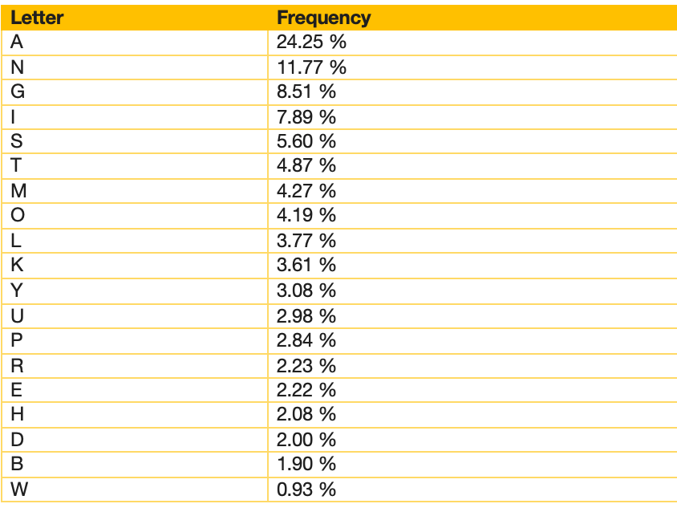

Frequency of Letters in Filipino
The frequency of letters in the Filipino language can be seen in the table below. This table was created using a character counter integrated in WordCreator. The data was based on a Filipino text with 2,151,963 characters (368,905 words), of which 1,724,634 characters were used for the counting. The text is a good mix of different literary genres. The results may vary if a different text is used as the basis.
The letters A, N, G, I, S and T are the 6 most frequent letters in the Filipino language.
